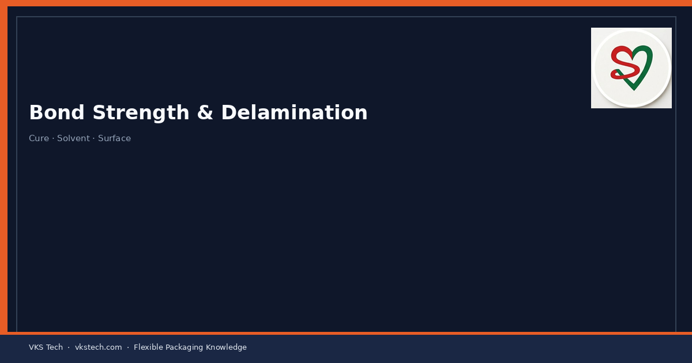
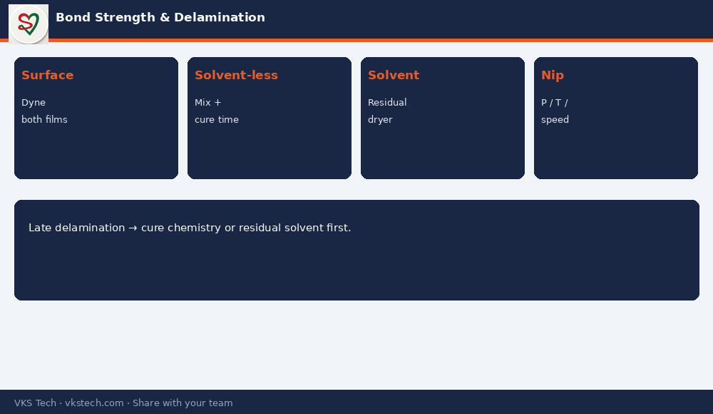

🔓 Delamination That Appears After the Job Left the Laminator Is the Most Expensive Kind of Failure.
📖 11-min read · Lamination quality · Production + QC
Bond strength is not only a lab number. On the floor it fails because of wrong adhesive type, incomplete cure (solvent-less), residual solvent (solvent-based), poor surface energy, or contamination. This article maps the common causes to actions you can take the same shift.
📌 Fast Checks
- Surface energy / dyne on both films before blaming adhesive
- Mix ratio and pot life for solvent-less
- Residual solvent / dryer profile for solvent-based
- Nip pressure, temperature and line speed vs recipe
- Cure time before slitting or pouching

💡 Truth: If bond fails only after 24–48 hours, look at cure chemistry and residual solvent first — not the operator who ran the next shift.
🔓 डेलामिनेशन जो जॉब लैमिनेटर छोड़ने के बाद दिखे — सबसे महंगी फेल्योर है।
📖 11-मिनट पढ़ें · लैमिनेशन क्वालिटी
💡 सच्चाई: अगर बॉन्ड 24–48 घंटे बाद फेल हो — पहले क्योर केमिस्ट्री और रेसिडुअल सॉल्वेंट देखें।